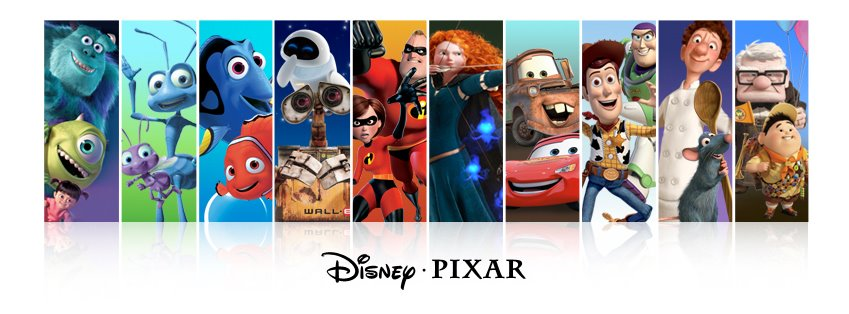

皮克斯所製作的電影已經贏得了包括26個奧斯卡獎，5座金球獎，3次格萊美獎在內的眾多獎項。
迪士尼公司和皮克斯動畫工作室（Pixar）公司於1995年合作推出，首部完全以3D電腦動畫攝製而成的長篇劇情動畫片。
這電影片在1995年11月22日和1996年3月22日分別在美國和英國公映。
主角是兩個玩具，牛仔警長胡迪（Woody）和未來太空人巴斯光年（Buzz Lightyear）
皮克斯製作，華特迪士尼以及Buena Vista Distribution在美國於1998年9月14日發布，英國部分於1999年2月3日發布。
這是第二部由迪士尼與皮克斯製作的三維電影。
這部電影講述了一群螞蟻聘用了「勇士蟲」來與貪婪的蝗蟲戰鬥，同時螞蟻希望勇士蟲能趕跑蝗蟲。
是一部2001年的美國電腦動畫喜劇片，由彼特·達克特執導，皮克斯動畫工作室製作，華特迪士尼影片發行。
影片主要圍繞怪物公司旗下僱傭的兩個怪物展開，
他們的工作就是晚上透過一扇又一扇有特殊功能的門，從怪物的世界進入人類世界中幼童的房間去嚇他們，因為孩子們的尖叫聲可以成為怪物世界所需能源的來源。
但是對於怪物來說，人類孩童據說是非常危險和致命的，只要輕輕的一下接觸就可以致死，並且爆發大範圍感染。
於是當一個人類孩童因偶然機緣進入怪物世界時，麥克和薩利必須冒著「生命危險」把她送回去。
由皮克斯動畫工作室製作，並於2003年由華特迪士尼發行的美國電腦動畫電影。
其故事主要敘述一隻過度保護兒子的小丑魚馬林（Marlin）和牠在路上碰到的擬刺尾鯛多莉（Dory）兩人一同在汪洋大海中尋找馬林失去的兒子尼莫（Nemo）。
在路途中，馬林漸漸了解到牠必須要勇於冒險、以及牠的兒子已經有能力照顧自己了。
皮克斯動畫工作室製作，迪士尼發行的第六部長篇電腦動畫，於2004年上映。
「超能先生」跟「彈力女超人」戀愛結婚後，被之前獲超能先生拯救的市民控告，
指超能先生侵犯他自殺的權利及令他身體受到傷害，其後有越來越多的市民控告所有的超人，政府為平息事件，要求所有超人退休且隱藏超能力，過著平常人的生活。
育有三個子女－小倩、小飛和小傑，他們也都遺傳了不同的超能力。
生活平凡的超能先生，退休多年卻面臨著「中年危機」，一心只想著能繼續行俠仗義，並和好朋友「酷冰俠」偷偷去救人。
直到被捲進大壞蛋辛拉登策劃的陰謀中，超能先生再度面臨考驗。
在拯救世界的同時，擁有不同超能力的超人家庭要如何團結抗敵，並解決各自的煩惱。
，由皮克斯動畫製作，並由華特迪士尼於2006年發行的電腦動畫電影。
閃電麥坤是一輛渴望贏得「活塞杯汽車大賽」的賽車。
驕傲和自負的麥坤，相信自己在賽車場上的表現是「個人秀」，總是忽略維修團隊提供的建議一意孤行。
在「岱諾可400」大賽的季決賽，麥坤在最後一圈取得壓倒性的領先，並且即將成為史上第一個奪得冠軍的新人選手，此時麥坤的輪胎卻爆胎了。
麥坤勉強跑完比賽，並且和路霸（麥克爾·基頓）與前任「冠軍」史崔威勒（理察·佩帝）打成平手，
將要在七天後在加州再次舉行附加賽以分出勝負。
是2007年一部由皮克斯動畫工作室製作、華特迪士尼影片出版的動畫電影。
這是一個關於一隻老鼠夢想成為巴黎一家法國餐廳傑出大廚的故事，是關於排除萬難追隨激情的故事。
老鼠對於廚房和廚房對於老鼠都是死路一條，所以可想而知老鼠成為大廚有多麼困難。
是2008年一部由皮克斯動畫工作室製作、華特迪士尼影片出版的電腦動畫科幻電影。
故事發生在數百年後的地球，人類因環境過於髒亂、甚至惡化，而人類受到大賣家集團(Buy n Large，BnL)的庇護之下，紛紛遷居外太空。
大賣家集團著手實行地球淨化行動，製作環境清理用機器人；「瓦力」(WALL-E)，放至地球進行清掃作業。
但過了數百年，多數的因太老舊而無法使用，直到全世界只剩下一台瓦力。
是2009年皮克斯動畫工作室第十部動畫電影，首部3D電影。
主角是78歲的老頭卡爾·費迪遜（Carl Fredricksen），當卡爾還是一個孩子，遇見有著同樣夢想的女孩艾莉（Ellie），
他們一同在中西部城鎮裡長大，最後結婚。艾莉總是夢想著到南美洲探險，
但機會尚未來到卻已病逝。
是一部由皮克斯動畫製作的3D電腦動畫電影，美國於2012年6月22日上映。
皇室的女兒，梅莉達（Merida）是一名個性急躁粗魯，有著橘紅色蓬鬆捲髮的公主。
她的願望是成為能夠被眾人稱為一個很厲害的弓箭手。
這與她母親艾琳諾皇后希望女兒成為舉止端莊的公主並早日出嫁的願望相背，也使得梅莉達與母親經常因想法不同而吵架。
為了改變母親的想法，梅莉達無意間以一個古老、黑暗的魔咒將母親變成了一隻熊，造成了王國的混亂。
這開啟了她們接下來一段不在預料之中的冒險旅程。
旅途中梅莉達母女必須要面對無法預料的大自然並尋找解開魔咒的方法，若是短時間內沒找出解除魔咒的方法皇后將永遠變成熊，再也無法回復成皇后...
截至2013年，皮克斯共發行了14部動畫長片，第一部是1995年的《玩具總動員》。
皮克斯至2014年已獲得27次奧斯卡獎、7次金球獎、11次葛萊美獎以及其他獎項。
自2001年奧斯卡最佳動畫片獎設立以來，皮克斯電影有七部獲獎，分別是《海底總動員》、《超人特攻隊》、《料理鼠王》、《瓦力》、《天外奇蹟》、《玩具總動員3》及《勇敢傳說》；還有兩部《怪獸電力公司》與《汽車總動員》獲得提名。